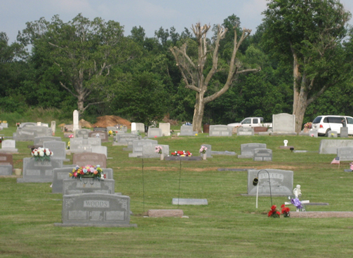
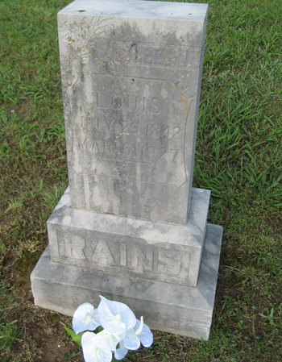
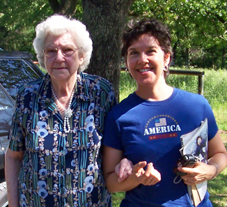
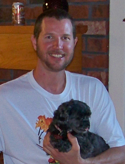
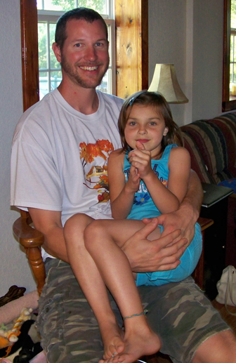
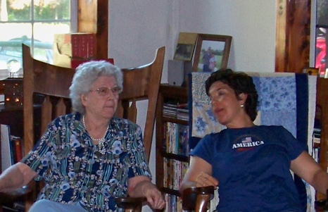

May 28 - 30, 2011
| Eric & I spent a relaxing weekend in
Westville for Memorial Day. It was capped off by a Bloomer/Morton
party at Desi's house. She throws great parties! |
|
 |
 |
| Mom & I took Gran to the Westville Cemetery to look for the grave of her great-uncle. | We found it! Louis Rains. July 26, 1842 - March 6, 1927 Gran was 3 when he died. |
 |
 |
| Gran has become a bit wobbly so I was her stablizer. (We didn't mention to her that I'm generally clumsy!!) |
Keith has just about taken over Prisser from Desirae |
 |
 This picture cracks me up! |
| Keith & Gracie. It's good to have a tall uncle - more lap to go around! | |
|
|
|
| A picture of me (that I actually like) and Prisser just before we
headed for OKC. We took the right roads this time and made it back over an hour faster! :-) |
|